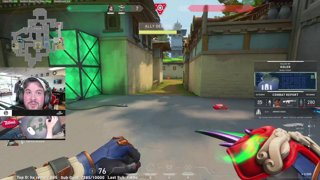
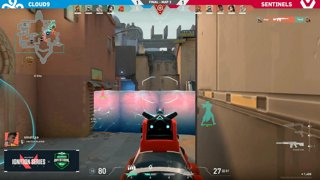
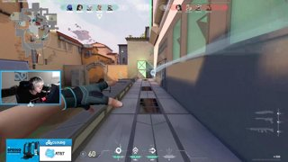

Hiko: Carrying 100T or Too Old to Play?
Spencer "Hiko" Martin is a former Counter-Strike: Global Offensive (CSGO) pro turned Valorant pro. He was recruited by esports company 100 Thieves (100T), owned by gaming personality Matthew "Nadeshot" Haag. Hiko is a popular streamer on the site Twitch, and often averages over ten thousand viewers. He is knowledgable about the game and spends his time answering questions sent in by viewers while playing. Many believed that Hiko being captain of the 100T Valorant team would make 100T unstoppable; however, it was revealed that Hiko did not have a direct say in the picks, only offering advice. (continued pg. 12)
|
The PAX Arena Invitational
The PAX Arena Invitational, part of Valorant's Ignition Series, started off with a bang last week. Valorant invited twenty teams to compete in this tournament, among them Team SoloMid (TSM), Cloud9 (C9), T1, and 100 Thieves (100T). For the first two days, four groups were created with five teams in each. The teams in each group competed round-robin style, best out of three matches, with the top two teams of each group moving on to a bracket-style quarterfinals. The prize pool was $25,000, with the first place team earning $10,000; second place, $5,000; third to fourth place, $3,000; and fifth to eighth place, $1,000. The matches were broadcasted on Twitch, a popular streaming site, while many of the players also streamed on their own channels.
During Day 1, Group A saw a strong start from TSM, who won 2-1 against Homeless (H/L) and 2-0 against Built by Gamers (BBG), earning two wins. The other teams in Group A, 100T, BBG, and H/L, each got one win, leaving 100 Blifted (100B) the only team in Group A with no wins. In Group B, T1 and Team Envy (NV) both won their two matchups 2-0 against Echo 8 and Way 2 French (W2F) and Kephrii and Echo 8, respectively. W2F was the only other team with one win from Group B. Group C had a similar outcome as Group B; Gen G and Immortals (IMT) were up two wins, while Prospects had one and Mixup (MIX) and Team Mang0 (Mang0) had none. Similarly, C9 and the Sentinels (SEN) in Group D both had two wins, Renegades (REN) had one, and Complexity Gaming (COL) and Team Owl (OWL) had none. By the end of the day, TSM, T1, NV, Gen G, IMT, C9, and SEN had promising starts and seemed like strong contenders for the tournament.
On Day 2, H/L and TSM from Group A both secured two wins, ensuring their spots in the quarterfinals. |

BBG and 100T put up good fights, but they were no match for H/L and TSM. In Group B, T1 secured two easy wins against NV and Kephrii to join the quarterfinals. NV managed to win a game against W2F to join T1. Although MIX in Group C gained two wins to make up for Day 1, it wasn't enough to catch up to IMT and Gen G, with IMT earning two wins and Gen G with one. SEN from Group D finished off strong with another two wins, ensuring their spot in the quarterfinals. Although C9 had two wins from the day before, COL was able to give them a run for their money, earning two wins; although, C9 made it to the quarters over COL. The end of Day 2 left eight teams standing: TSM, H/L, T1, NV, IMT, Gen G, SEN, and C9.
|
Day 3 brought a bracket-style elimination, similar to the round-robin, where teams played best out of three. TSM was able to earn a win against NV, advancing them to the semifinals. SEN and Gen G were close, with SEN ultimately winning 2-1. H/L had a blowout win over T1, as well as C9 with IMT, leaving TSM, SEN, H/L, and C9 in the semifinals.
Day 4 and 5 were action packed; TSM had a promising start, but were knocked out by SEN winning 2-0. H/L was able to come back from their rough start, but they were no match for C9, losing 2-0. In the finals, SEN and C9 competed against each other, with SEN ultimately winning 3-1 and walking away with $10,000. |
|
TenZ is Valorant's Newest Phenomenon
Tyson "TenZ" Ngo is another former Counter-Strike: Global Offensive (CSGO) pro turned Valorant pro. He used to play CSGO for esports team Cloud9 (C9) until his frequent losses led to his retirement. Now, TenZ streams on Twitch and is one of the most popular Valorant streamers on the site. He has been recruited by C9 again, this time to play on their Valorant team. His exciting playstyle and creativty certainly provide viewers an entertaining match to watch, and enemies a difficult one to win. (continued pg. 5)

|
|
Valorant's Battle Pass and Skins
Riot Games is no stranger to convincing consumers to buy in-game cosmetics. Their popular game, League of Legends, is known for the varities of skins players can equip. Now, in Valorant, players can unlock many skins through the completion of the battle pass, approximately $10, or buying skins from the shop, which range from $10 to hundreds of dollars. The player base is extremely divded over the prices of the skins, some stating that a few gun skins shouldn't be costing hundreds of dollars, while others argue that this is the only way for Riot to make money from a free-to-play game. (continued pg. 8)
|